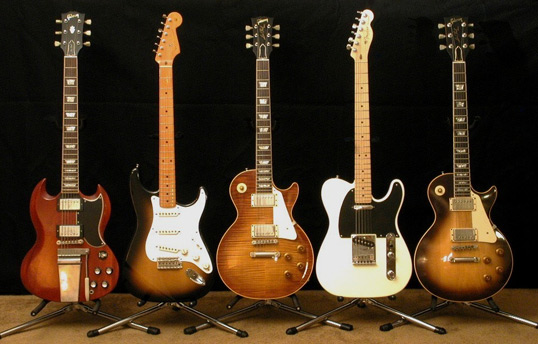

Hey there! My name is Nick, and I'm a software developer living in Charleston, SC. My family and I just moved here, and we're excited to see what opportunity awaits!
As a developer, I am interested in:
- Projects that reward and necessitate creativity
- Working in a collaborative environment that brings out the best in all involved
- Loving what I do!
About
I've spent the last several years touring the country as a guitar player for a national country act. I was fortunate enough to see amazing places, play amazing shows, and meet amazing people. Working with different peole in different places every week taught me a great deal about teamwork and resolution. Now, as a student at Thinkful, I'm able to apply these skills, with my taste for the creative, to a new career in development. As a bonus, I get to have my amazing wife and beautiful 2-year-old daughter by my side as I embark on this newly beachside programming venture!
Please reach out for anything you might need. In the meantime, I look forward to working with other great developers to build robust projects, and really just great software!
Projects
While my portfolio of projects currently consists of a goose egg in terms of quantity right now, I am currently working toward a graduation from Thinkful's Coding Bootcamp. I trust that in my time at Thinkful, there will be a lot of projects to begin, and hopefully to complete, to showcase my work ethic and talents to a potential next employer! Until then, please allow me to exemplify that I at least know how to present my projects to you in a clean and orderly fashion.
Guitar Quiz App
I've always been a bit of a guitar fanatic, and as a touring musician, I've had the chance to go around and see, play, and learn about the great guitars in the world. Using HTML, JavaScript, and CSS, I've built an app that tests the User's knowledge through a series of five questions. Take a look here!
You can find the full code here.